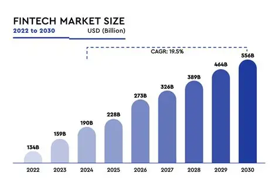

Fintech is evolving at lightning speed. In 2025, several trends are shaping the future of financial services. One of the most prominent is the integration of AI and machine learning into everything from fraud detection to personalized financial advice.
Another major trend is the rise of embedded finance, where financial services are integrated directly into non-financial platforms. Think of buying insurance while booking a flight or getting a loan through an e-commerce checkout.
Decentralized Finance (DeFi) continues to gain traction, offering peer-to-peer financial services without traditional intermediaries. Lastly, regtech—technology that helps companies comply with regulations—is becoming essential as governments catch up with fintech innovation.
